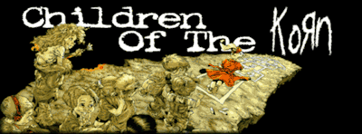

CHILDREN OF THE KORN RING
Welcome to Children of the Korn Ring, a webring dedicated to the iconic band Korn. KORN is a band formed in 1993. Anyone can join this webring, as long as you're a fan of KoRn and your site is handmade.
What is a webring???
A Webring is a collection of websites linked together, like a ring! The websites in the webring usually share some sort of theme, topic, or interest.
